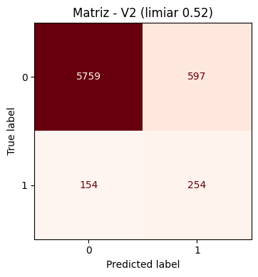

Objetivo e Abordagem do Modelo
O objetivo do modelo XGBoost (Classificador) é prever a ocorrência de um evento específico na cadeia de distribuição: o pedido vai atrasar ou não? (Variável alvo: delivered_on_time, onde 0 = atraso e 1 = no prazo).
O Desafio do Desbalanceamento
A classe de atrasos é extremamente minoritária (apenas ~6% dos dados). Se o modelo prever que "nenhum pedido vai atrasar", ele terá 94% de acurácia, mas será inútil para o negócio. Para corrigir isso, aplicamos ponderação de classes durante o treinamento, calculada automaticamente como a razão entre a classe majoritária (no prazo) e a minoritária (atraso). Nos dados de treino, isso resultou em um peso aproximado de 15.60x para a classe de atrasos, forçando o algoritmo a prestar atenção às falhas logísticas.
Otimização de Hiperparâmetros (Tuning)
Foi realizada uma busca aleatória (Random Search) com Validação Cruzada Estratificada (StratifiedKFold com 3 folds) para encontrar a melhor combinação de hiperparâmetros. Foram avaliados 16 candidatos diferentes, combinando variações em profundidade, taxa de aprendizado, subsample, regularização e outros parâmetros do XGBoost.
Método de Validação (Out-of-Fold): Para reduzir otimismo excessivo, cada linha do conjunto de treino recebeu uma previsão de um fold onde não participou do treinamento. Isso garante que a seleção dos melhores parâmetros seja baseada em previsões verdadeiramente não-vistas.
A métrica guia para a escolha não foi a Acurácia, mas sim o F2-Score da classe de atraso (beta=2), que penaliza muito mais o modelo por "deixar passar" um atraso do que por dar um "alerta falso". Em caso de empate no F2, o Recall foi usado como critério de desempate.
Melhores Parâmetros Encontrados (Modelo V2)
'n_estimators': 250 (número de árvores)
'max_depth': 5 (profundidade máxima de cada árvore)
'learning_rate': 0.07 (taxa de aprendizado, menor = mais conservador)
Subsampling (Redução de Variância):
'subsample': 0.85 (85% das amostras por árvore)
'colsample_bytree': 0.95 (95% das features por árvore)
'min_child_weight': 7 (mínimo de peso por nó folha)
Regularização (Prevenção de Overfitting):
'gamma': 0.1 (penalidade para complexidade)
'reg_alpha': 0.5 (regularização L1)
'reg_lambda': 1.0 (regularização L2)
Melhor Limiar de Decisão (Threshold): 0.52
(Probabilidade acima de 0.52 é classificada como "Atraso")
Comparativo de Performance: Baseline vs Otimizado
Abaixo, comparamos o modelo inicial (V1 - Baseline, Threshold 0.50) com o modelo tunado (V2 - Otimizado, Threshold 0.52) com foco estrito na detecção da classe 0 (Atrasos) nos dados de Teste.
| Modelo | Acurácia Geral | ROC-AUC | Precision (Atraso) | Recall (Atraso) | F2-Score (Atraso) |
|---|---|---|---|---|---|
| V1 (Baseline) | 92.76% | 0.8397 | 41.67% | 50.25% | 0.4826 |
| V2 (Otimizado) | 88.90% | 0.8480 | 29.85% | 62.25% | 0.5115 |
Evolução das Métricas (V2 vs V1)
- Acurácia: -4.16% (88.90% vs 92.76%)
Diminuiu propositalmente para capturar mais atrasos. Uma acurácia alta com baixo recall é inútil. - Precision: -28.37% (29.85% vs 41.67%)
Mais falsos positivos de atraso, mas esse é o trade-off necessário. - Recall: +23.90% (62.25% vs 50.25%)
Ganho massivo: agora detecta 62% dos atrasos reais versus 50% antes. - ROC-AUC: +0.99% (0.8480 vs 0.8397)
Melhoria na capacidade discriminativa geral do modelo. - F2-Score: +5.99% (0.5115 vs 0.4826)
Melhor equilíbrio focado na prevenção de atrasos.
Análise de Negócio e Insights Logísticos
A Ilusão da Acurácia
O modelo V1 tinha quase 93% de acurácia, mas só detectava metade (50.2%) dos problemas reais. No contexto do Last Mile, uma acurácia alta não serve de nada se os clientes continuam recebendo entregas fora do prazo sem nenhum aviso prévio. O modelo V2 reduziu a acurácia para ~89%, mas se tornou um mecanismo de alerta preventivo significativamente mais eficaz.
O Trade-off: Precision vs Recall
Com o modelo V2 otimizado, o Recall subiu para 62.25%. Isso significa que, de todos os pacotes que vão de fato atrasar, a logística conseguirá prever e atuar preventivamente em 62 de cada 100.
O preço pago por isso foi a queda da Precision para 29.85%. Na prática: a cada 10 pacotes que o modelo sinaliza como "Risco de Atraso", apenas 3 realmente atrasariam. Os outros 7 chegariam no prazo, mas geraram um falso alerta.
Análise de Custo-Benefício:
✅ Custo de um falso alerta: reaalocar recursos de logística ou contatar cliente para ajustar expectativas (baixo custo)
❌ Custo de um atraso não previsto: cliente decepcionado, possível reembolso, reputação abalada (alto custo)
Conclusão: Sob a ótica operacional, é preferível lidar com sete alertas preventivos incorretos do que deixar um cliente sem aviso prévio sobre um atraso real.
Visão da Matriz de Confusão
Para visualizar exatamente onde o modelo está errando e acertando com o limiar de 0.52, analise a distribuição dos erros:

Matriz de Confusão - V2 (Limiar 0.52)
Limitações e Considerações Práticas
- Taxa de Falsos Positivos: Com 29.85% de precisão, ~70% dos alertas são falsos. Sistema de alerta deve ser robusto para não saturar a operação.
- Cobertura Parcial: Mesmo com 62.25% de recall, 38% dos atrasos ainda não serão detectados. Não é um sistema à prova de falhas, é um sistema de mitigação de riscos.
Conclusão Técnica
- O algoritmo XGBoost lidou excelentemente bem com a complexidade e as não-linearidades dos dados climáticos e operacionais, conseguindo extrair padrões mesmo em uma base desbalanceada.
- A escolha da métrica alvo (F2-Score com beta=2) provou ser vital. Otimizar para acurácia ou até para F1-Score resultaria em um modelo inútil. F2 força o foco em não deixar atrasos passarem desapercebidos.
- A validação cruzada estratificada com método Out-of-Fold garante que os parâmetros e limiares selecionados não sofram com overfitting.
- Diretriz Estratégica: Implementar o modelo V2 como sistema de alerta preventivo. O custo de um "falso alerta" sistêmico é consideravelmente menor do que o impacto negativo de uma entrega atrasada que pegue o cliente de surpresa.